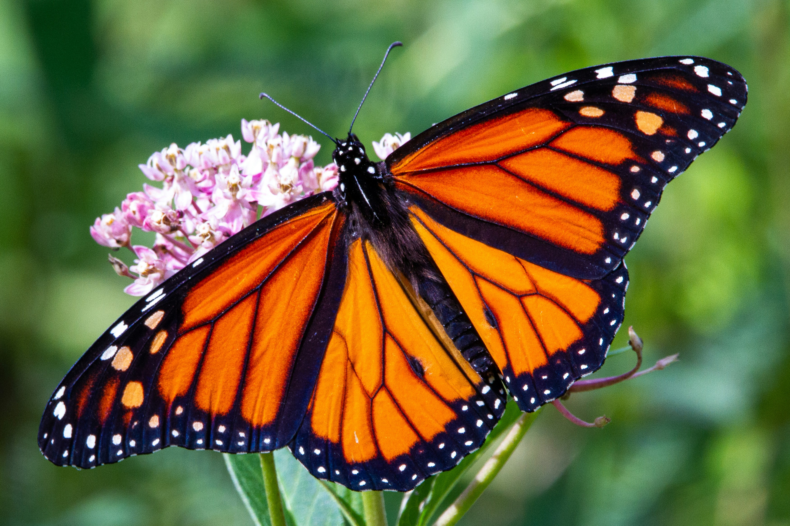
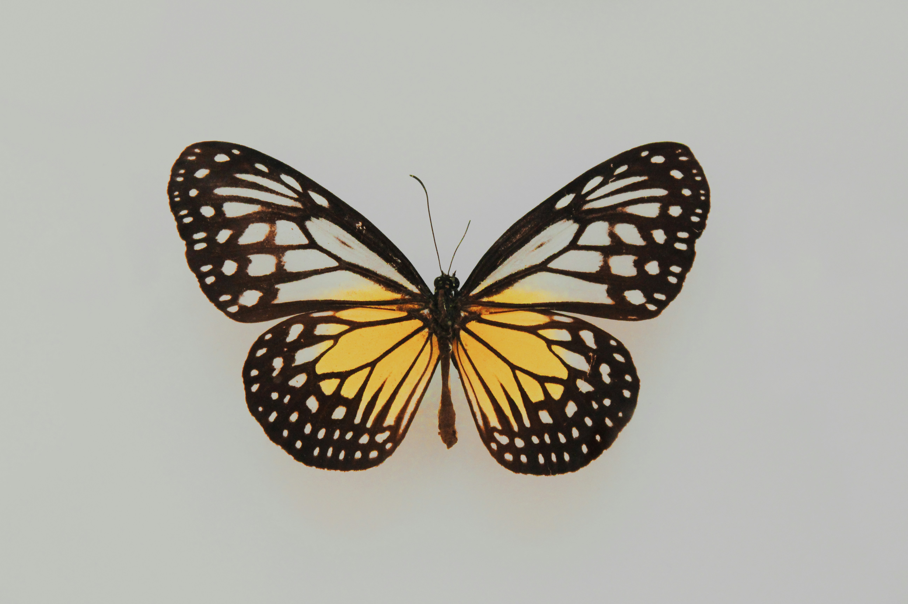
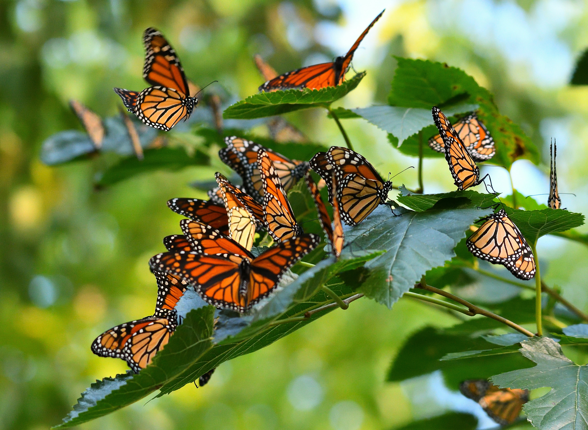
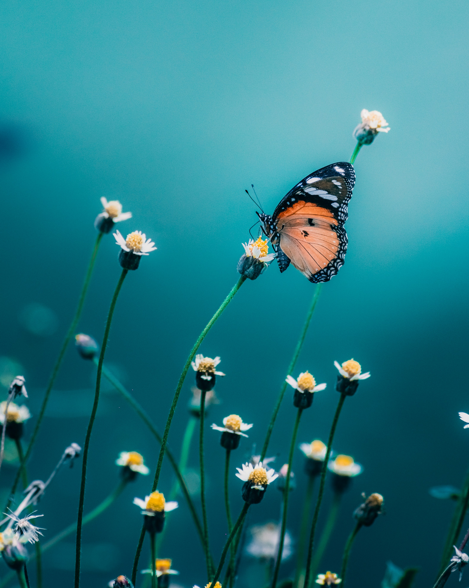

Monarch Butterfly
One of North America's most iconic insects, the monarch butterfly undertakes a multi-generational migration spanning thousands of miles — and faces an uncertain future.

About the Monarch
The monarch butterfly (Danaus plexippus) is one of North America's most recognizable insects, with distinctive black, orange, and white wings spanning 3.5 to 4.0 inches. Known for their extraordinary annual migration between Canada and Mexico, monarchs serve as important pollinators and stand as symbols of natural wonder — and of the fragility of complex ecosystems.
Monarch Fast Facts
Explore the Monarch
From metamorphosis to migration, the monarch's biology is as remarkable as its journey.

Life Cycle & Development
Monarchs undergo complete metamorphosis — egg, larva, pupa, adult — in as little as 25 days. Fewer than 10% of eggs survive to adulthood due to predators, weather, parasites, and disease.
Migration & Navigation
The eastern population migrates 1,200–2,800 miles from northeastern North America to mountain forests in central Mexico each autumn. The full route is completed across multiple generations.
Host Plants & Feeding
Caterpillars feed exclusively on milkweed, absorbing cardiac glycosides that make them toxic to predators. Adults drink nectar from coneflowers, asters, goldenrods, and Mexican sunflowers.

Toxicity & Mimicry
Monarchs are toxic and foul-tasting, advertising this through bright warning coloration. The viceroy butterfly shares similar markings in a case of Müllerian mimicry — both species benefit.

Major Threats to Survival
Herbicide-resistant crops have devastated milkweed habitat. Climate change, habitat fragmentation, parasitic infections, and mass captive-rearing also threaten population health.

Conservation & Human Connection
The monarch is the state insect of seven U.S. states. Butterfly gardens, monarch waystations, tagging programs, and protected sanctuaries in Mexico and California support recovery efforts.
Monarchs in Space
In 2009, monarch butterflies were successfully reared aboard the International Space Station as part of the Monarchs in Space project. The butterflies emerged normally from their pupae in microgravity — the first butterfly species to complete metamorphosis off Earth.
Read more on WikipediaDeeper Dives
Expand any topic to learn more about monarch biology and research.
The Monarch Genome
The monarch was the first butterfly species to have its complete genome sequenced, containing 16,866 protein-coding genes. This genetic map has provided critical insights into migratory behavior, circadian rhythms, and UV-light sensitivity — helping scientists understand how monarchs navigate thousands of miles with such precision.
Tetrachromatic Vision
Monarchs possess four types of color receptors — tetrachromatic vision — allowing them to perceive ultraviolet light and distinguish between yellow and orange in ways humans cannot. This ability likely aids in identifying flowers and milkweed plants during migration and foraging.
Predators That Adapted
Some predatory birds, including the black-headed grosbeak, have evolved resistance mutations in their heart proteins that allow them to safely consume monarchs — toxins that would be lethal to most other birds. This evolutionary arms race illustrates the dynamic relationship between prey toxicity and predator adaptation.
The Western Population
A distinct western population migrates to overwintering sites along the California coast rather than Mexico. Some individuals from this population have also been documented reaching Mexican overwintering locations. The western population has experienced even steeper declines than its eastern counterpart and receives focused conservation attention in California.
"The names of the Danai candidi have been derived from the daughters of Danaus, those of the Danai festivi from the sons of Aegyptus."
Support Monarch Conservation
Plant milkweed in your yard, support waystation programs, and learn how citizen science tagging initiatives help researchers track migration patterns year after year.
Learn More on Wikipedia